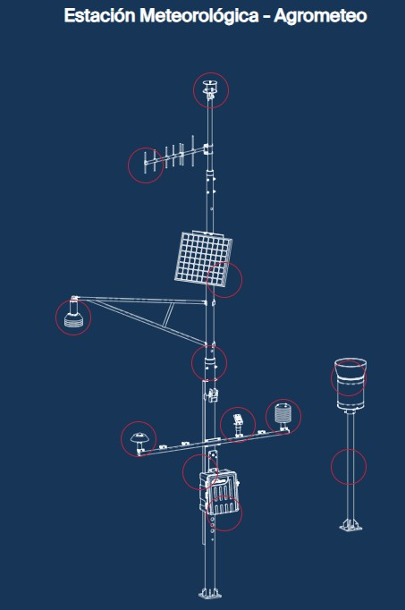
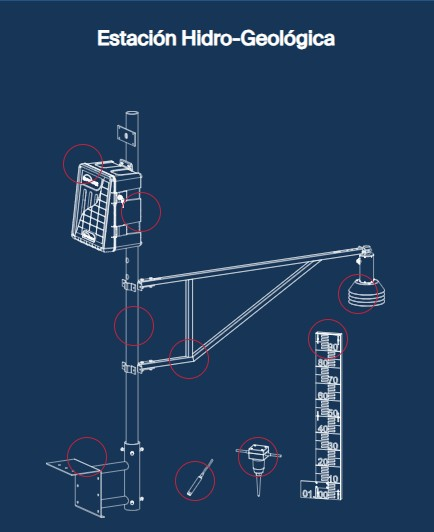
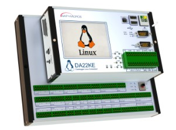
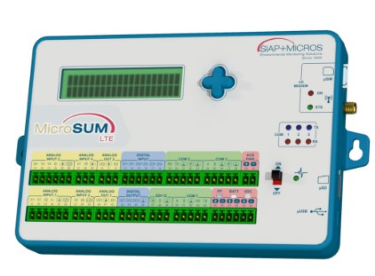
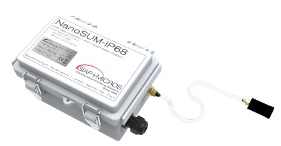
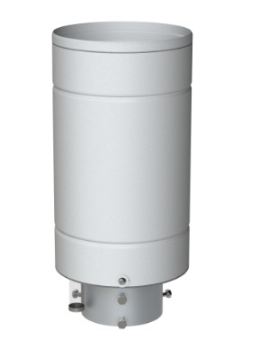
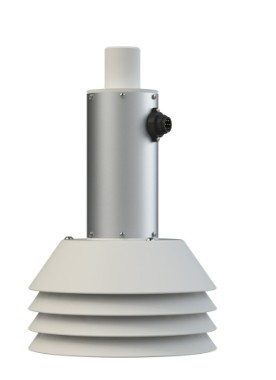
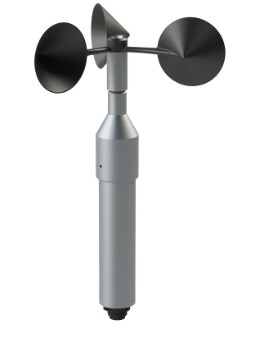
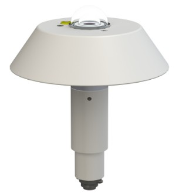

📞 +507 6675-8529
✉ contacto@zernikeal.com
Soluciones profesionales para la medición, adquisición, transmisión y gestión de datos meteorológicos e hidrológicos en estaciones individuales y redes de monitoreo.
El monitoreo meteorológico e hidrológico permite conocer de forma continua las condiciones de la atmósfera, las precipitaciones, los ríos, los embalses, las cuencas hidrográficas y otras variables fundamentales para la gestión del territorio.
Mediante estaciones automáticas, sensores especializados, dataloggers y sistemas de comunicación es posible registrar, almacenar y transmitir información confiable desde lugares remotos hacia centros de supervisión y plataformas de análisis.
Estas soluciones ayudan a mejorar la prevención de inundaciones, la administración de recursos hídricos, la planificación agrícola, la protección civil, la investigación científica y la evaluación de las condiciones climáticas.
SIAP+MICROS es una empresa italiana especializada en el diseño, fabricación e instalación de sistemas y servicios llave en mano para el monitoreo ambiental.
La empresa produce instrumentación meteorológica desde 1925 y desarrolla estaciones, sensores, sistemas de adquisición, comunicaciones y software para aplicaciones meteorológicas, hidrológicas, oceanográficas y ambientales.
Sus soluciones permiten implementar desde estaciones individuales hasta redes completas de monitoreo, integrando sensores de campo, sistemas de alimentación, dataloggers, telemetría, alarmas y plataformas de gestión de datos.

Sistemas completos para medir y transmitir variables meteorológicas y climáticas.
Ver producto
Soluciones para el monitoreo de nivel, caudal, precipitaciones y condiciones hidrológicas.
Ver producto
Unidad avanzada para adquisición, procesamiento, almacenamiento y transmisión de datos ambientales.
Ver producto
Datalogger compacto y de bajo consumo para estaciones meteorológicas y redes ambientales.
Ver producto
Sistema compacto de adquisición y comunicación para estaciones remotas y aplicaciones de protección civil.
Ver producto
Sensores para la medición precisa de precipitación acumulada e intensidad de lluvia.
Ver producto
Instrumentos para medir de forma continua el nivel del agua en ríos, canales, lagos y embalses.
Ver producto
Equipos para medir velocidad y dirección del viento en aplicaciones meteorológicas profesionales.
Ver producto
Sensores para estudios meteorológicos, agrícolas, climáticos y energéticos.
Ver productoHerramientas para recibir, visualizar, validar, administrar y analizar datos de estaciones remotas.
Ver producto| Componente | Función |
|---|---|
| Sensores | Miden las variables meteorológicas, hidrológicas y ambientales. |
| Datalogger | Adquiere, procesa y almacena las mediciones. |
| Sistema de comunicación | Transmite los datos mediante LTE, radio, satélite, Ethernet u otras tecnologías. |
| Centro de control | Recibe, almacena y supervisa la información procedente de las estaciones. |
| Software | Permite visualizar datos, tendencias, alarmas, mapas e históricos. |
Cada sistema puede configurarse según los parámetros que se desean medir, las condiciones del lugar de instalación, la disponibilidad de energía, la cobertura de comunicación y la frecuencia requerida para la transmisión de datos.
Zernike Panamá ofrece apoyo para la selección de sensores, configuración de estaciones, integración de comunicaciones, instalación, puesta en marcha y mantenimiento de redes hidrometeorológicas.